Citrix Federated Authentication Service (SAML) 2411
Navigation
This article applies to Federated Authentication Service (FAS) versions 2411, 2402 LTSR, 2203 LTSR, 1912 LTSR, and all other versions 7.9 and newer.
- Change Log
- Overview
- Install/Upgrade FAS Service
- FAS Group Policy
- FAS Configuration
- StoreFront Configuration
-
SAML Configuration:
Change Log
- 2025 Jan 9 - updated Versions section for version 2203 CU6
- 2024 Dec 4 - updated Versions and Install sections for version 2411
- 2024 April 2 - added Force Authentication in NetScaler SAML Action
- 2024 March 6 - added Standard Edition instructions
- 2024 April 30 - updated Versions section for version 1912 LTSR CU9
- 2023 Aug 11 - added link to Deployment Guide: Multi-Domain FAS Architecture at Citrix Tech Zone.
- 2023 May 17 - added info from Can I enable other credential providers after installing Duo Authentication for Windows Logon? (h/t Barry Barclay)
Overview
Citrix Federated Authentication Service (FAS) enables users to log in to Citrix Gateway and Citrix StoreFront using SAML authentication.
With SAML, Citrix Gateway and StoreFront do not have access to the user's password and thus cannot perform single sign-on to the VDA. FAS works around this limitation by using issuing certificates that can be used to logon to the VDA.
- StoreFront asks Citrix Federated Authentication Service (FAS) to use a Microsoft Certificate Authority to issue Smart Card certificates on behalf of users.
- The certificates are stored on the FAS server.
- The VDA requests the user's certificate from FAS so it can complete the VDA Windows logon process.
FAS can be used for any authentication scenario where the user's password is not provided.
Requirements:
-
Microsoft Certification Authority (CA) in Enterprise mode.
- When configuring FAS, you tell it what CA server to use.
- You can build a new CA server just for FAS.
- You can install CA on the FAS server.
-
Domain Controllers must have Domain Controller certificates. See CTX218941 FAS - Request not supported.
-
The certificates on the Domain Controllers must support smart card authentication. Certificates created using the Microsoft CA certificate template named Domain Controller Authentication supports smart cards. Manually created Domain Controller certificates might not work. See CTX270737 for the Domain Controller certificate requirements.
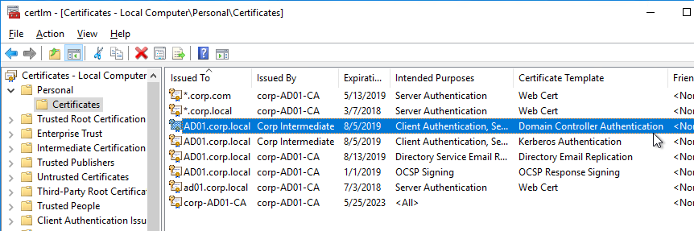
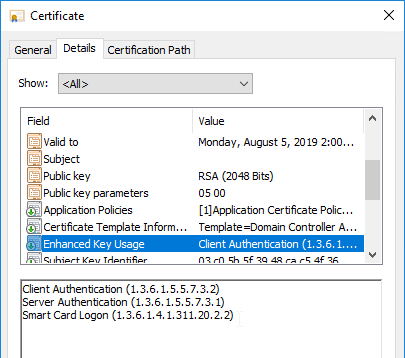
- Citrix Virtual Apps and Desktops or XenApp/XenDesktop 7.9 or newer
- StoreFront 3.6 or newer
-
Citrix Gateway.
-
StoreFront 3.9 and newer also support SAML authentication natively without Citrix ADC.
- SAML in an nFactor (Authentication Virtual Server) configuration works in both browsers and Workspace app.
- For multiple domains, see Deployment Guide: Multi-Domain FAS Architecture at Citrix Tech Zone.
Configuration overview:
-
Build one or more FAS servers.
- For security reasons, FAS should be its own server and not installed on a Delivery Controller.
-
Upload Certificate Templates to Active Directory and configure a CA server to issue certificates using the new templates.
-
Enterprise Admin permissions are needed to upload the Certificate Templates.
- One of the Certificate Templates is for Smart Card logon to Citrix VDA.
- The other two Certificate Templates are to authorize FAS as a certificate registration authority.
- The registration authority certificate does not renew automatically so be prepared to renew it manually every two years. See Renew registration authority certificates at Citrix Docs.
- Install the Citrix FAS group policy .admx template into PolicyDefinitions.
-
Create a group policy object (GPO) and configure the GPO with the addresses of the FAS servers.
-
The GPO must apply to FAS servers, StoreFront servers, and every VDA. It does not need to apply to Delivery Controllers, but there's no harm in applying it to the Delivery Controllers.
- Authorize FAS to request certificates from a Microsoft CA server.
- Configure FAS Rules to permit StoreFront servers to request FAS to generate certificates for users and permit VDA machines to retrieve the certificates from FAS.
- Configure StoreFront to use FAS for VDA single sign-on.
Links:
- CTA Julian Mooren Citrix FAS – Notes from the Field
- CTP Wilco van Bragt Citrix Federated Authentication Service (FAS) Tips and Tricks
From Citrix CTX225721 Federated Authentication Service High Availability and Scalability: you can build multiple FAS servers. Enter all FAS server FQDNs in the Group Policy. StoreFront will then use a hashing algorithm on the username to select a FAS server.
- If you have less than 10K users, one FAS server with 4 vCPUs (2.5Ghz) should be sufficient.
- You will require a minimum of one FAS server (with 8 vCPUs) per 25,000 users if all users expect to be able to logon under cold start conditions (no keys or certificates cached) within 60-90 minutes.
- A single FAS server can handle greater than 50K users under warm start conditions (keys and certificates pre-cached)
- One reserve FAS server for every four FAS servers for “Day 1” cold start (Users get new keys/certificates) & disaster recovery scenarios
- Split the FAS Certificate Authority from Certificate Authority that performs other tasks for both security and scalability purposes.
Michael Shuster explains the Group Policy configuration for FAS in multiple datacenters at HowTo: Active-Active Multi-Datacenter Citrix FAS.

Also see the Citrix Federated Authentication Service Scalability whitepaper.
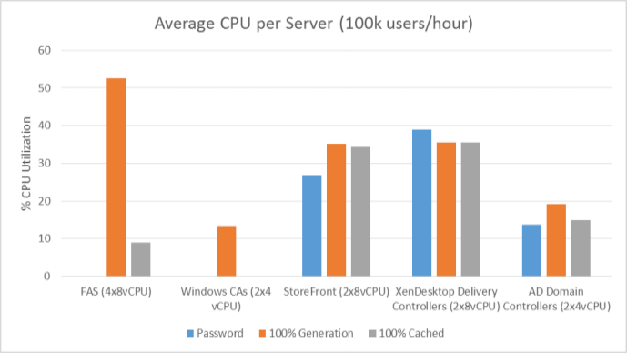
Federated Authentication Service Versions
The most recent Federated Authentication Service Current Release is version 2411.
- Download FAS 2411.

For LTSR versions of Citrix Virtual Apps and Desktops (CVAD) and StoreFront, install the version of FAS that comes with the CVAD LTSR version.
- FAS LTSR version 2402 CU2 is included in the Citrix Virtual Apps and Desktops 2402 LTSR CU2 ISO.
- FAS LTSR version 2203 CU6 is included in the Citrix Virtual Apps and Desktops 7 2203 LTSR CU6 ISO.
- FAS LTSR version 1912 CU9 is included in the Citrix Virtual Apps and Desktops 7 1912 LTSR CU9 ISO.


Install/Upgrade Federated Authentication Service
The service should be installed on a secure, standalone server that does not have any other Citrix components installed. The FAS server stores user authentication keys, and thus security is paramount.
- On the Federated Authentication Service server, go to the Citrix Virtual Apps and Desktops, or XenDesktop 7.9, or newer ISO, and run AutoSelect.exe. Or you can download the standalone installer and run that.
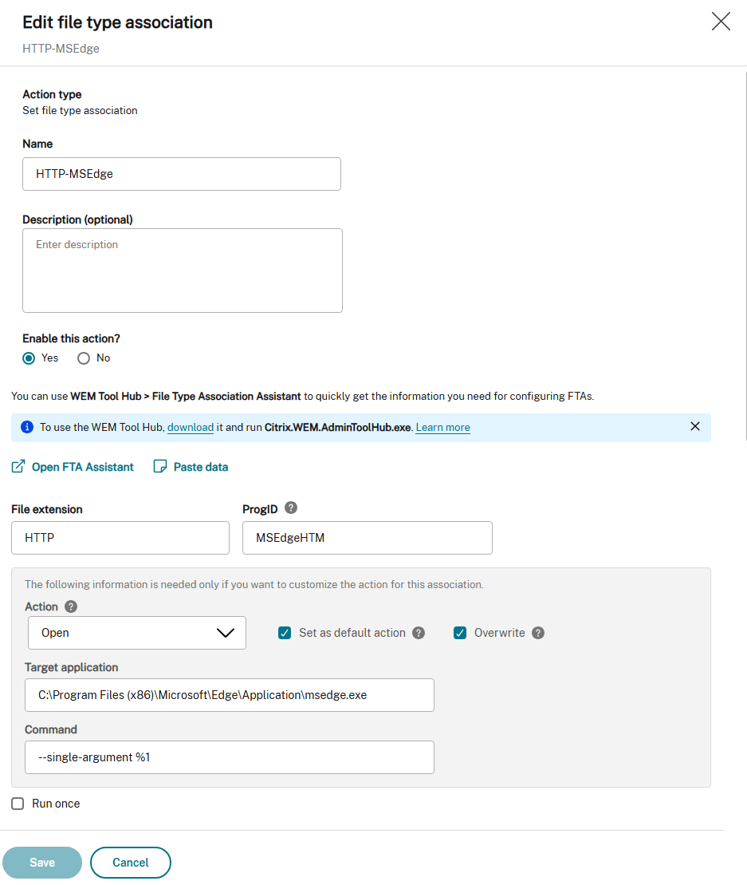
- In the lower half of the window, click Federated Authentication Service.

- In the Licensing Agreement page, select I have read, understand, and accept the terms of the license agreement, and click Next.

- In the Core Components page, click Next.

- In the Firewall page, click Next.

- In the Summary page, click Install.

- The installer will probably ask for a restart.

- After the reboot, and after logging in again, you might see a Locate 'Citrix Virtual Apps and Desktops 7' installation media window. Don't click anything yet.

- Go to the Citrix_Virtual_Apps_and_Desktops_7_2411.iso file and mount it.

- Go back to the Locate 'Citrix Virtual Apps and Desktops 7' installation media window.
- On the left, expand This PC, and click the DVD Drive.
- Click Select Folder.

- After the reboot, and after logging in again, you might see a Locate 'Citrix Virtual Apps and Desktops 7' installation media window. Don't click anything yet.
- Click Finish.

FAS Group Policy
Configure a Group Policy that instructs StoreFront servers and VDAs on how to locate the FAS servers.
- On the Federated Authentication Service server, browse to C:\Program Files\Citrix\Federated Authentication Service\PolicyDefinitions. Copy the files and folder.
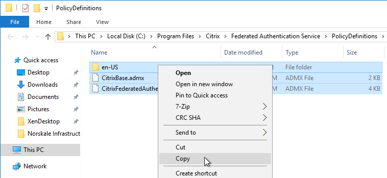
- Go to \\domain.com\SYSVOL\domain.com\Policies\PolicyDefinitions and paste the files and folder. If PolicyDefinitions doesn’t exist in SYSVOL, then copy them to C:\Windows\PolicyDefinitions instead.
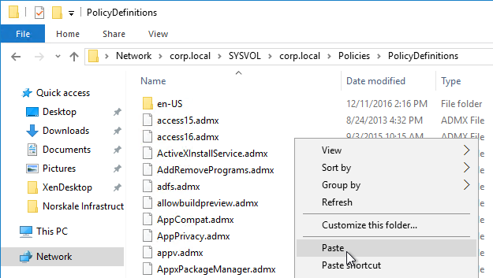
- Edit a GPO that applies to all StoreFront servers, all Federated Authentication Service servers, and all VDAs.
- Navigate to Computer Configuration > Policies > Administrative Templates > Citrix Components > Authentication.
- Edit the setting Federated Authentication Service.
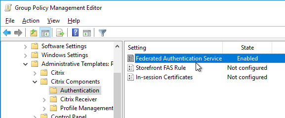
- Enable the setting and click Show.
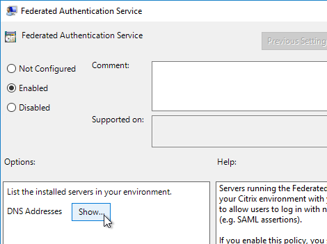
-
Enter the FQDN of the Federated Authentication Service server. You can add more than one Federated Authentication Service server.
- Michael Shuster explains the Group Policy configuration for FAS in multiple datacenters at HowTo: Active-Active Multi-Datacenter Citrix FAS.
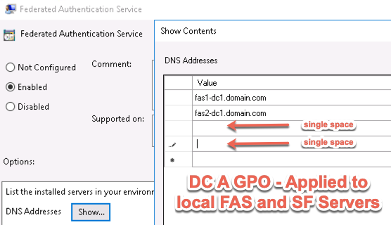
- Click OK twice.
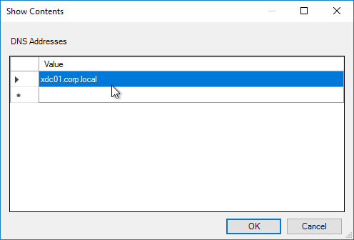
- On the Federated Authentication Service server, and VDAs, run gpupdate.
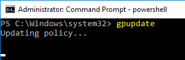
- On the FAS server, and on VDAs, look in the registry at HKLM\Software\Policies\Citrix\Authentication\UserCredentialService\Addresses. Make sure this key and value exists. The number one cause why FAS doesn't work is because this key is missing from VDAs. The FAS Address GPO must apply to VDAs too.
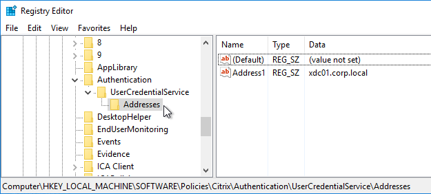
- If the VDAs and Users are in different domains, see CTX220497 Users from one AD Domain not able to get FAS user certificates from another trusted domain: add the Citrix StoreFront Servers, FAS server and VDA servers to the Windows Authorization Access Group in the users' domain. Also see Deployment Guide: Multi-Domain FAS Architecture at Citrix Tech Zone.
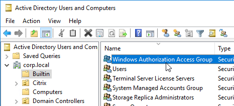
- By default, the VDAs will verify the certificates aren't revoked by downloading the Certificate Revocation List. You can disable CRL checking by configuring HKEY_Local_Machine\System\CurrentControlSet\Control\LSA\Kerberos\Parameters\UseCachedCRLOnlyAndIgnoreRevocationUnknownErrors (DWORD) = 1 as detailed at CTX217150 Unable to login using the FAS Authentication - Getting Stuck on Please wait for local session manager.
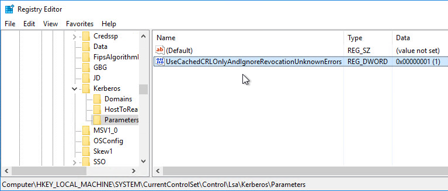
-
If your VDAs have third party credential providers (e.g., Duo), then it might interfere with FAS Single Sign-on.
-
For Duo, see Can I enable other credential providers after installing Duo Authentication for Windows Logon? to whitelist the FAS credential provider, which is {81C8E4DC-B376-4D88-BCCD-BD0DD65BEE2B} CitrixMirrorCredentialProvider.
- Michael Shuster explains the Group Policy configuration for FAS in multiple datacenters at HowTo: Active-Active Multi-Datacenter Citrix FAS.
FAS 1909+ Configuration
If you prefer to script the FAS configuration, then see Citrix Blog Post Automating the Citrix Federated Authentication Service with PowerShell.
FAS 1909 and newer have a different configuration GUI than FAS 1906 and older.
Here are 1909 and newer GUI configuration instructions:
- Log into the FAS server as an Enterprise Administrator that can upload certificate templates to Active Directory.
- On the FAS server, from the Start Menu, run Citrix Federated Authentication Service as administrator. Make sure you run it elevated.
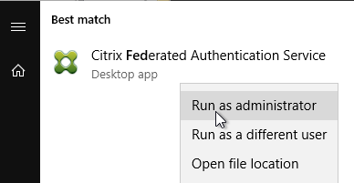
- In the tab named Initial Setup, in the row named Deploy certificate templates, click Deploy.
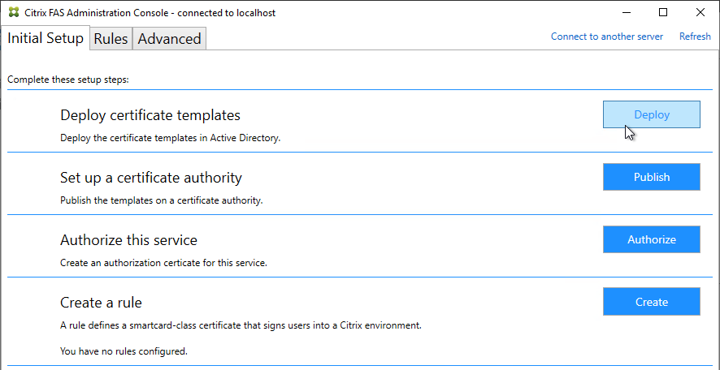
- Click OK to deploy the templates to Active Directory.
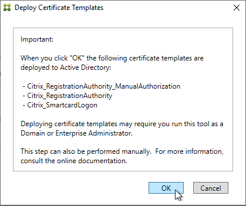
- In the row named Set up a certificate authority, click Publish.
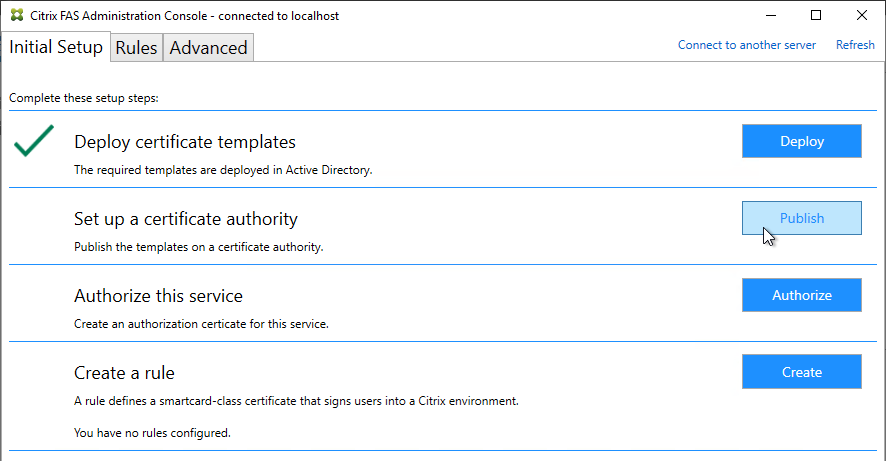
- Select an Enterprise Certificate Authority that will be issue the FAS certificates and click OK.
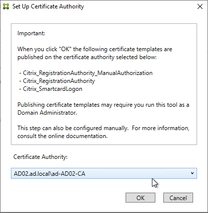
- In the row named Authorize this service, click Authorize.
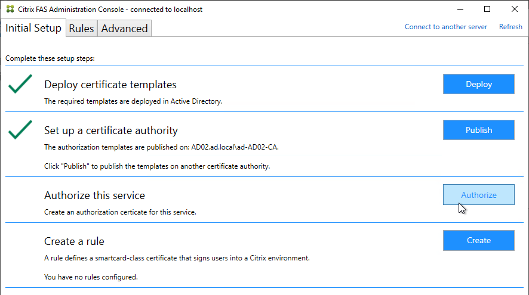
- Select a CA that will issue this FAS server a Registration Authority certificate. Later, you will need to open the Certificate Authority console on the chosen server. Click OK.
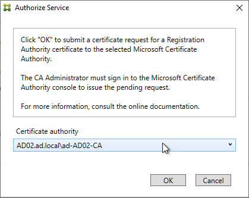
- The row named Authorize this service has a new icon indicating it is waiting on the registration authority certificate to be approved.
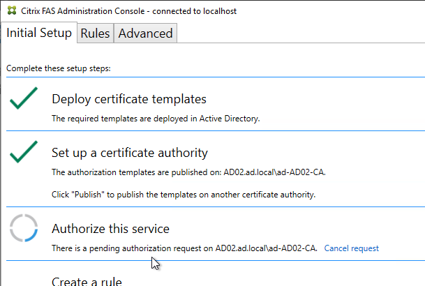
- Open the Certification Authority console and point it to the CA server. In the Pending Requests node, find the certificate request for the FAS server and Issue it.
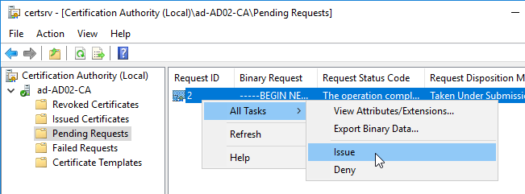
- Back in the FAS Administration Console, on the top right, click Refresh.
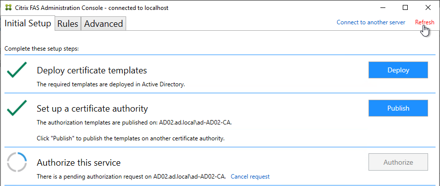
- The row named Authorize this service should now have a green check mark.
- In the row named Create a rule, click Create.
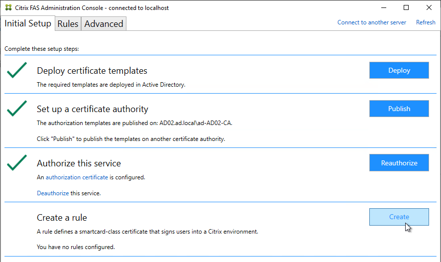
- In the Rule name page, leave it set to Create the default rule and click Next.
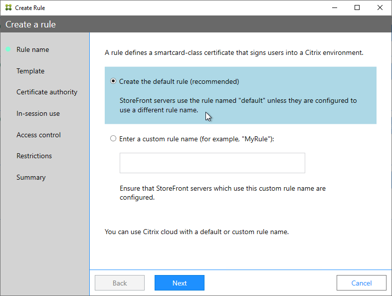
- In the Template page, click Next.
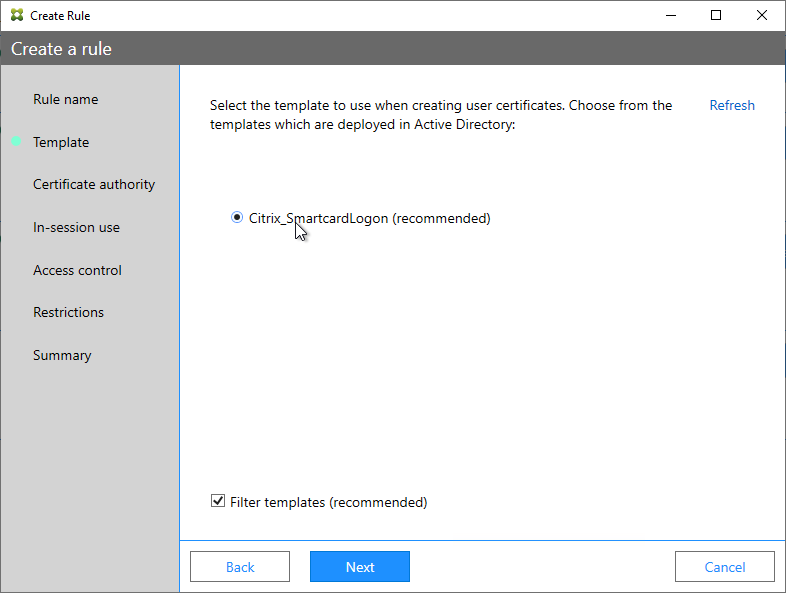
- In the Certificate authority page, select the CA that has the issuing templates configured and click Next. You can select more than one CA server.
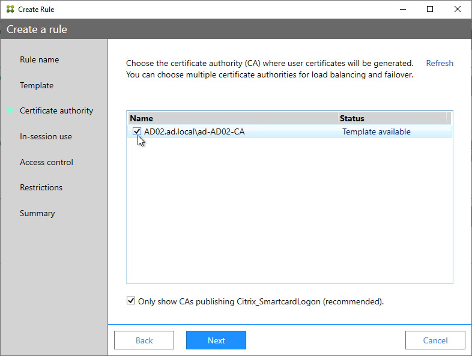
- In the In-session use page, click Next.
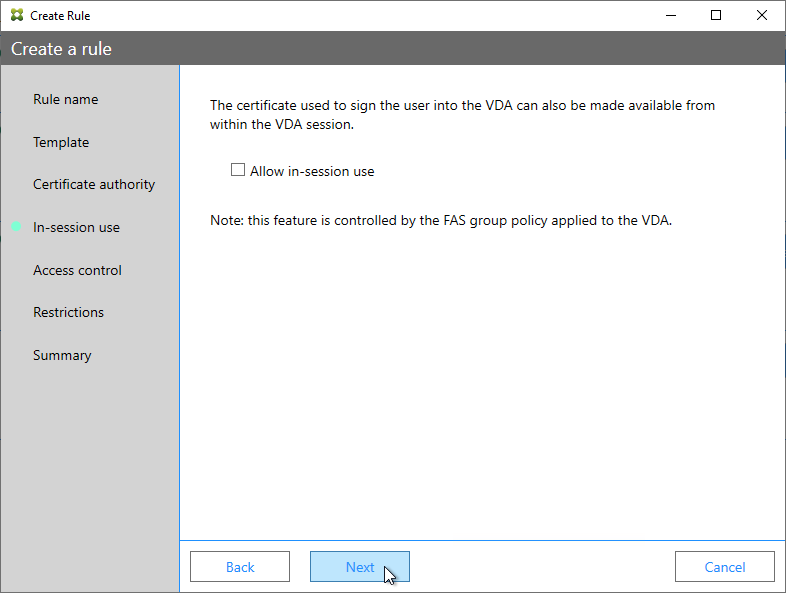
- In the Access control page, click the link to Manage StoreFront access permissions.
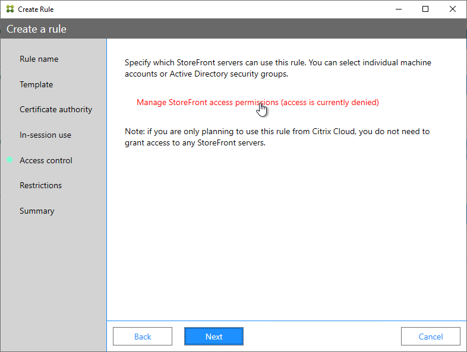
- In the Permission for StoreFront Servers page, add your StoreFront servers and give them the permission Assert Identity. Click OK.
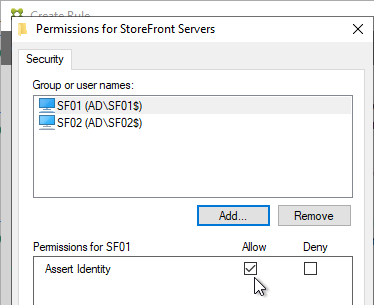
- Back in the Create Rule wizard, click Next.
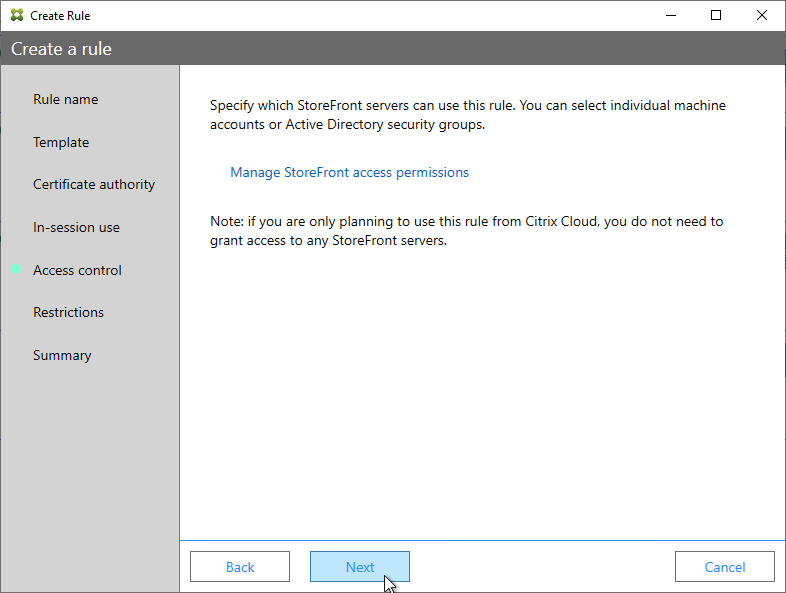
- In the Restrictions page, you can optionally reduce the VDAs that are authorized to use FAS. Click Next.
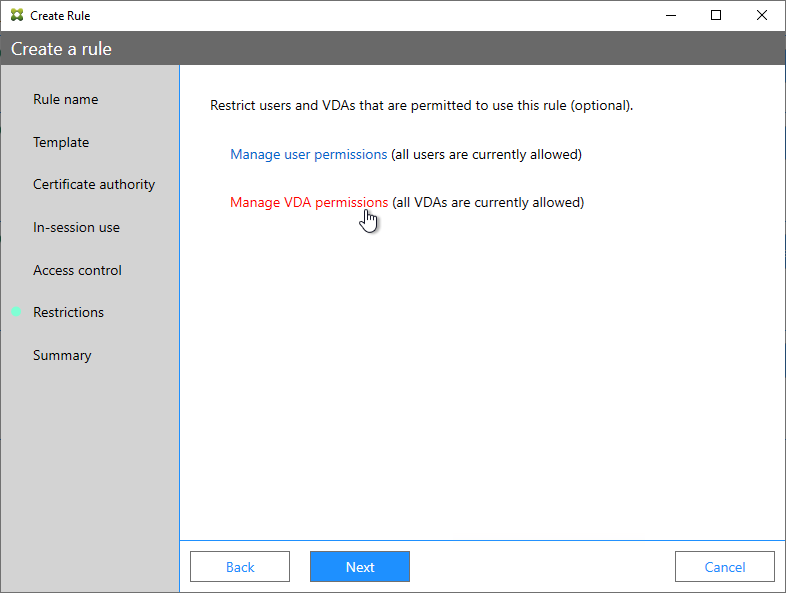
- In the Summary page, click Create.
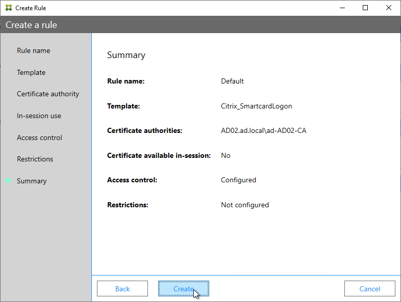
-
The FAS Registration Authority certificate expires in two years. You'll need to manually renew the FAS Registration Authority certificate before it expires. Put a notification on your calendar. For details, see Renew registration authority certificates at Citrix Docs.
- In the row named Authorize this service, you can click the link for authorization certificate to see when it expires. Before expiration, use the Reauthorize button on the right of the same row.
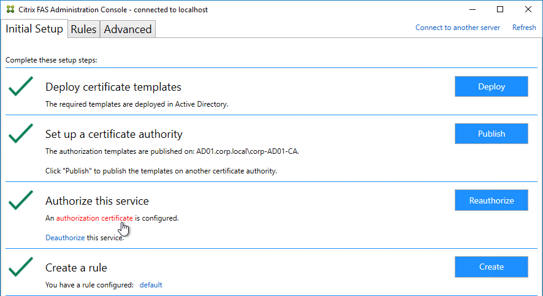
- Jump ahead to Certificate Templates.
- In the row named Authorize this service, you can click the link for authorization certificate to see when it expires. Before expiration, use the Reauthorize button on the right of the same row.
FAS 1906 and older Configuration
If you prefer to script the FAS configuration, then see Citrix Blog Post Automating the Citrix Federated Authentication Service with PowerShell.
Here are GUI configuration instructions for FAS 1906 and older:
- Log into the FAS server as a Domain Administrator or Enterprise Administrator that can upload certificate templates to Active Directory.
- On the FAS server, from the Start Menu, run Citrix Federated Authentication Service as administrator. Make sure you run it elevated.
- The Federated Authentication Service FQDN should already be in the list (from group policy). Click OK.
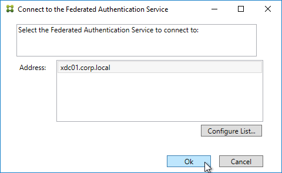
- In Step 1: Deploy certificate templates, click Start.
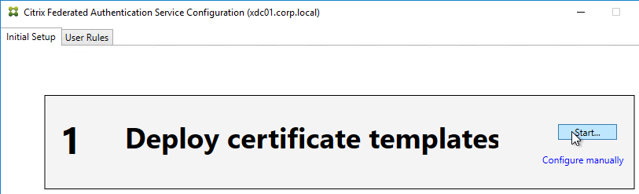
- Click OK to add certificate templates to Active Directory. Sufficient permission is required.
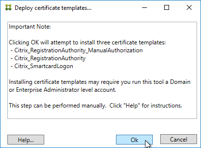
- In Step 2: Setup Certificate Authority, click Start.
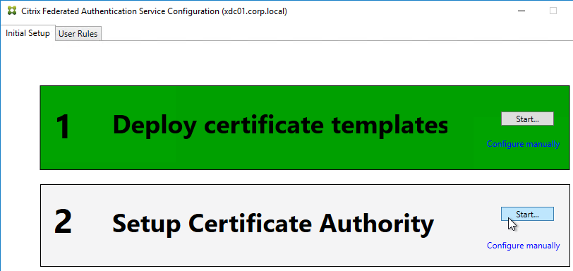
- Select a Certificate Authority to issue the certificates, and click Ok.
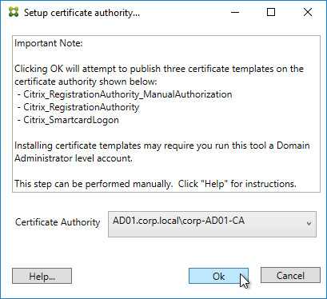
- In Step 3: Authorize this Service, click Start.
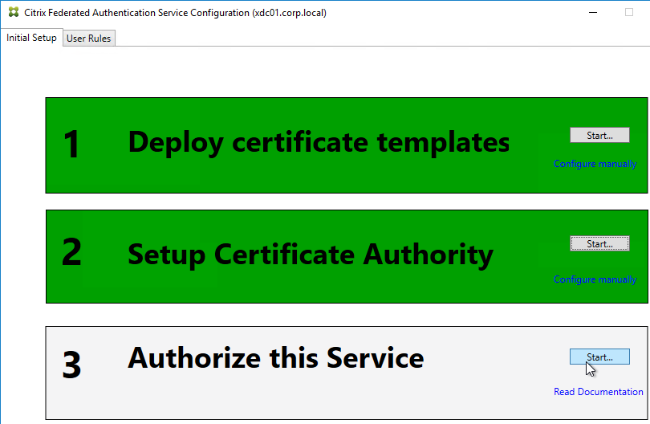
- Step 3 automatically submits an online request for the Registration Authority certificate to the CA and stores the non-exportable private key in the standard Microsoft Enhanced RSA and AES Cryptographic Provider.
- Alternatively, you can submit the certificate request manually, and store the private key in TPM or HSM as detailed at Federated Authentication Service private key protection at Citrix Docs. When running New-FasAuthorizationCertificateRequest, the -UseTPM switch is optional.
-
Select the issuing Certificate Authority, and click OK.
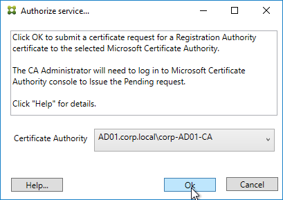
-
Authorize this Service only lets you select one Certificate Authority. If you want to load balance certificate requests against multiple Certificate Authorities, then see Set up multiple CA servers for use in FAS at Citrix Docs.
-
-
Step 3 is now yellow.
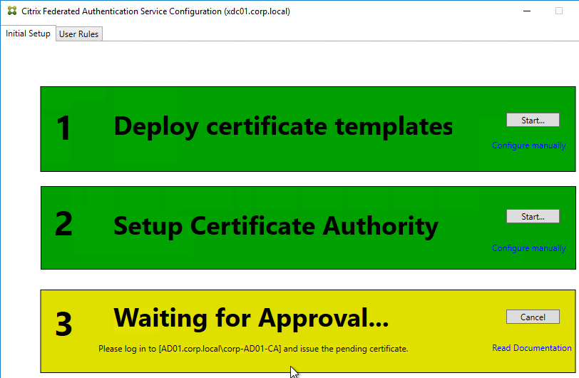
- On the Microsoft CA server, go to the Certification Authority Console > Pending Requests. Find the pending request, and Issue it.
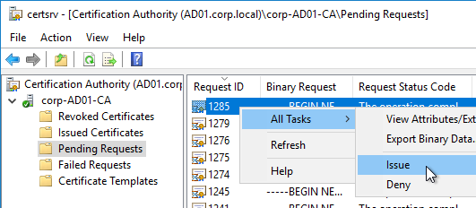
- In a minute or two, Federated Authentication Service will recognize the issued certificate and Step 3 will turn green.
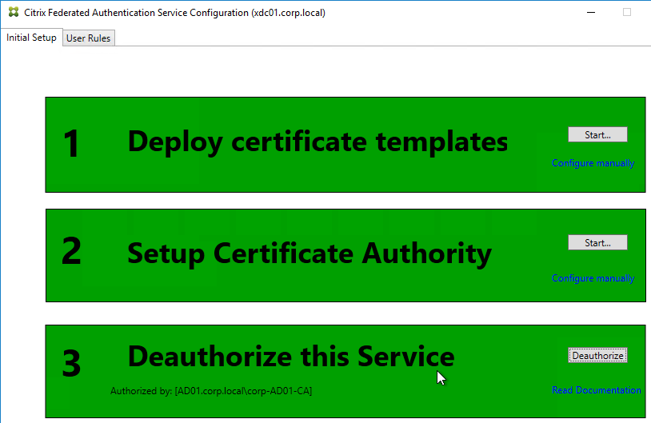
- After FAS authorization with the CA, in the FAS Configuration tool, switch to the User Rules tab.
- Use the Certificate Authority drop-down to select the issuing Certificate Authority.
- Use the Certificate Template drop-down to select the Citrix_SmartcardLogon template.
- Click Edit next to List of StoreFront servers that can use this rule.
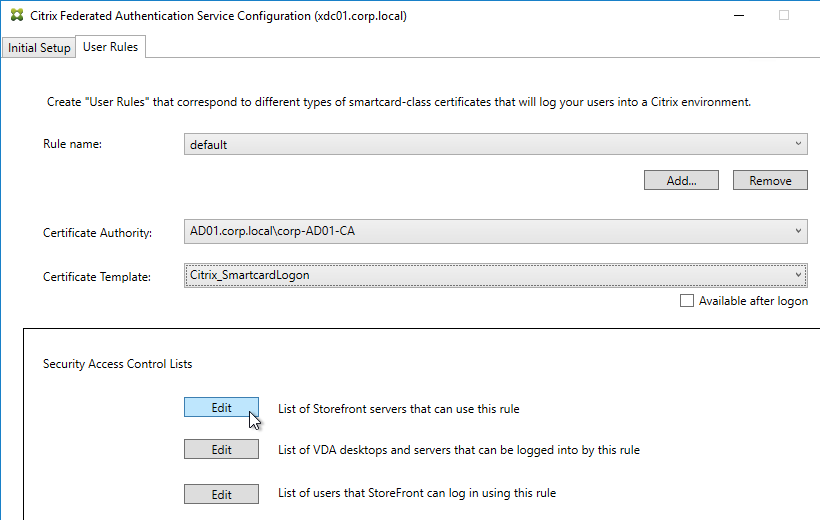
- Remove Domain Computers from the top half, and instead add your StoreFront servers. You could add an Active Directory security group instead of individual StoreFront servers.
- On the bottom half, make sure Assert Identity is Allowed. Click OK.
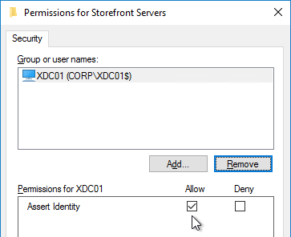
- By default, all users and all VDAs are allowed. You can click the other two Edit boxes to change this.
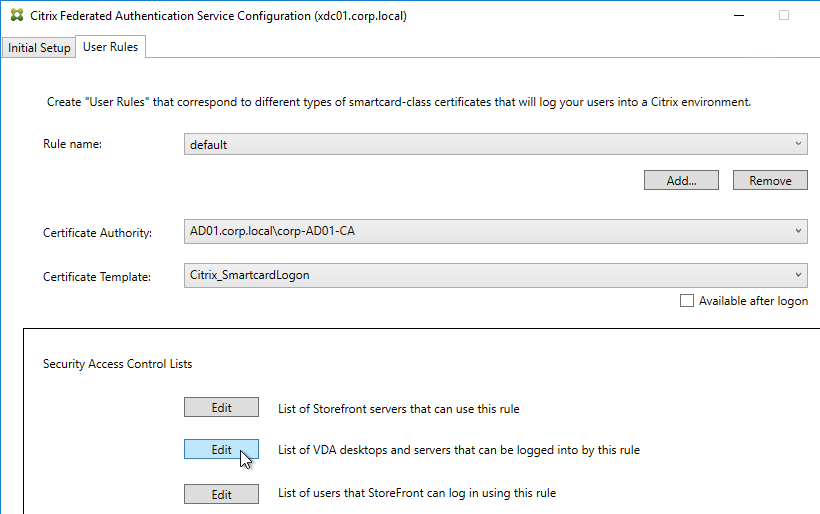
- When done, click Apply.
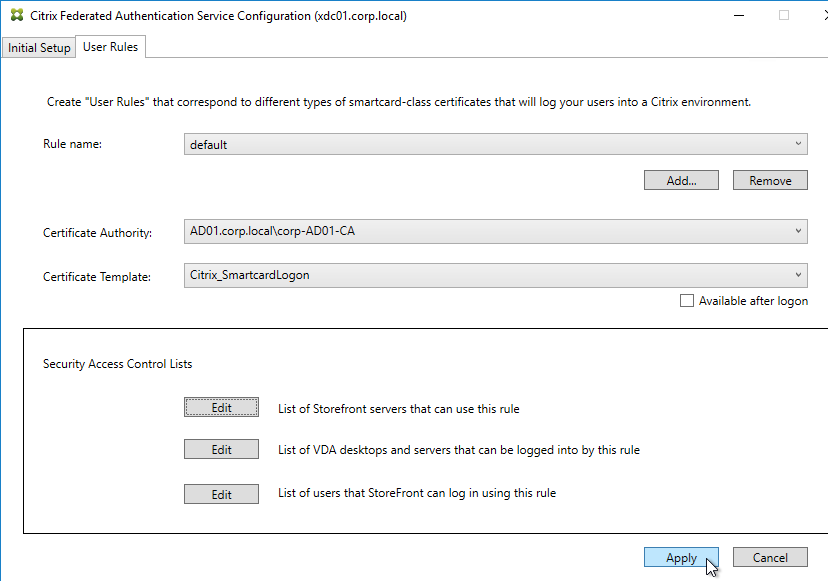
- Click OK when you see Rule updated successfully.
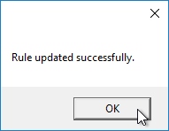
-
The FAS Registration Authority certificate expires in two years. You'll need to manually renew the FAS Registration Authority certificate before it expires. Put a notification on your calendar. For details, see Renew registration authority certificates at Citrix Docs.
-
To see the expiration date of the authorization certificate, run the following PowerShell command after running
add-pssnapin Citrix.Authentication.FederatedAuthenticationService.V1:
-
Certificate Templates
The deployed FAS Certificate Templates from older versions of FAS have Autoenroll enabled. Newer versions of FAS (e.g., 2203) no longer have Autoenroll enabled.
- Open the Certificate Templates console. One option is to open the Certification Authority console, right-click Certificate Templates, and then click Manage.
- There should be three templates with names starting with Citrix_. Open the properties on each one.
- On the Security tab, highlight each group assigned to the template.
- On the bottom half, uncheck the box in the Autoenroll row but leave Enroll checked. Perform this step for every group assigned to this template. Then click OK.
- Repeat disabling autoenroll for the other two templates.
The Registration Authority certificate templates are permitted to all Domain Computers. You might want to change that.
- Open the Properties of one of the Citrix_RegistrationAuthority certificate templates.
- On the Security tab, remove Domain Computers.
- Add your FAS servers and enable the Enroll permission.
- Repeat for the other Registration Authority certificate.
To further restrict who can be issued certificates, go to your Certificate Authority’s Properties and use the Enrollment Agents tab to restrict enrollment agents.
StoreFront Configuration
Once FAS is enabled on a StoreFront store, it applies to all connections through that store, including password-based authentications. One option is to create a new store just for FAS users.
- Check the registry at at HKLM\Software\Policies\Citrix\Authentication\UserCredentialService\Addresses to confirm that the group policy with FAS addresses has been applied to the StoreFront servers.
-
On the StoreFront 3.6 or newer server, run the following elevated PowerShell command:
-
Run the following commands. Adjust the store name as required.
$StoreVirtualPath = "/Citrix/Store" $store = Get-STFStoreService -VirtualPath $StoreVirtualPath $auth = Get-STFAuthenticationService -StoreService $store Set-STFClaimsFactoryNames -AuthenticationService $auth -ClaimsFactoryName "FASClaimsFactory" Set-STFStoreLaunchOptions -StoreService $store -VdaLogonDataProvider "FASLogonDataProvider" -
If you have multiple StoreFront servers, Propagate Changes.
- In Web Studio (CVAD 2212 and newer), go to Settings and Enable XML Trust.

-
Or on a Citrix Delivery Controller, run the following PowerShell command:
-
If you ever need to disable FAS on StoreFront, run the following commands. Adjust the store name as required.
$StoreVirtualPath = "/Citrix/Store"
$store = Get-STFStoreService -VirtualPath $StoreVirtualPath
$auth = Get-STFAuthenticationService -StoreService $store
Set-STFClaimsFactoryNames -AuthenticationService $auth -ClaimsFactoryName "standardClaimsFactory"
Set-STFStoreLaunchOptions -StoreService $store -VdaLogonDataProvider ""
SAML Configuration
SAML Flow
SAML flows like this:
-
(Optional) User goes to the web application aka Service Provider (e.g. Citrix Gateway).
- The Service Provider (SP) redirects the user's browser to the Identity Provider's (IdP) SAML Single Sign-on (SSO) URL and includes an authentication request in the Redirect. The IdP SSO URL might be different for each Service Provider.
- The Authentication Request from the Service Provider includes a Service Provider Entity ID. The IdP matches the SP Entity ID with an entry in its database so it knows which SP is making the authentication request. The Entity ID must match on both the SP and the IdP.
- If the Authentication Request is signed by the Service Provider's certificate private key, then the IdP will verify the signature using the Service Provider's certificate public key. In this scenario, the Service Provider's certificate (without private key) must be loaded into the IdP.
-
The user authenticates to the IdP, typically using Multi-factor Authentication.
-
If the user was redirected from the SP, then the IdP already knows which SP to authenticate with.
- If the user went directly to the IdP, then the user typically needs to click an icon representing the web application (Service Provider).
-
IdP generates a SAML Assertion containing the user's userPrincipalName or email address.
-
Configure the IdP to include the user's UPN or email address in the NameID field of the assertion. SAMAccountName won't work with Citrix FAS.
- The SAML Assertion also includes the Service Provider's Entity ID. The ID in the Assertion must match the ID configured on the SP.
- IdP signs the SAML Assertion using an IdP certificate private key.
-
IdP has a configuration for the SP that includes a SAML Assertion Consumer Service (ACS) URL. IdP redirects the user's browser to the SP's ACS URL and POST's the SAML Assertion.
- The ACS URL on Citrix Gateway ends in /cgi/samlauth
- SP uses the IdP certificate's public key to verify the signature on the SAML Assertion.
-
The IdP's certificate (without private key) is installed on the Citrix ADC so it can verify the Assertion's signature.
-
SP extracts the user's userPrincipalName from the Assertion and uses the UPN for Single Sign-on to StoreFront and the rest of the Citrix components.
-
Note that the SP does not have access to the user's password and thus that's why we need Citrix FAS to generate certificates for each user.
Configure the SAML IdP
You typically start the configuration on the Identity Provider (IdP). Every IdP has unique instructions. Search Google for your IdP and Citrix ADC and you might find a IdP-specific guide. After IdP configuration, you download the IdP's certificate and copy the IdP's SSO URL so you can configure them on Citrix ADC.
-
Azure Active Directory IdP - See the next section. Also see:
- Marius Sandbu Setting up Citrix SSO with Windows 10 and Azure AD Join
-
ADFS IdP - jump to the ADFS as IdP section. Also see:
-
George Spiers ADFS authentication to StoreFront using NetScaler, SAML and Citrix Federated Authentication Service
- Dennis Radstake SAML authentication for Citrix XenDesktop and XenApp.
- Citrix Blog Post ADFS v3 on Windows Server 2012 R2 with NetScaler.
Azure AD as SAML IdP
- In Azure Portal, go to Azure Active Directory.
- On the left, click Enterprise applications.
- In the new blade that appears, on the All applications page, on the right, click New application.
- In the All Categories view of the gallery, on the top right, click Non-gallery application.
- Give the application a descriptive name. Azure AD shows this name in the myapps portal. Click Add.
- After the application is created, on the left, in the Manage section, click Single sign-on.
- On the right, click the big button for SAML.
- In section 1 labelled Basic SAML Configuration, click the pencil icon.
- In the Identifier (Entity ID) field, enter an identifier in URI format. Usually it matches the FQDN of the Citrix Gateway and can be entered in https://gateway.corp.com format. You'll later need to specify the exact same Identifier on the Citrix ADC.
- In the Reply URL (Assertion Consumer Service URL) field, enter a URL similar to https://mygateway.company.com/cgi/samlauth. The path must be /cgi/samlauth. The scheme should be https. And the FQDN is your Citrix Gateway's FQDN.
- Click Save. Then you might have to click the x on the top right to make it go away.
- In section 2 labelled User Attributes & Claims, notice that it defaults to sending the userprincipalname. You can click the pencil to change the attribute used for the Name identifier value. Whatever value you send will need to match the userPrincipalNames of local Active Directory accounts (aka shadow accounts).
- In section 3 labelled SAML Signing Certificate, click the Download link in the Certificate (Base64) line.
- Citrix ADC 12.1 and newer support SAML metadata so feel free to copy the App Federation Metadata Url field.
- If you are running NetScaler 12.0 or older, then you will need to copy the Login URL field from section 4 labelled Set up gateway5.corp.com
- On the left, under Manage, click Users and groups.
- Use the normal process to assign Azure AD users and groups to this application. Click Assign.
- Jump to the section named Citrix ADC SAML Configuration.
ADFS as SAML IdP
The screenshots in this section use ADFS as an example IdP. Your IdP will be different.
- In your SAML IdP, create a Relying Party Trust (aka service provider trust) or new Application.
- Since we're configuring the IdP before we configure Citrix ADC and thus don't have access to the SP metadata, select the option to Enter data about the relying party manually.
- For the Assertion Consumer Service URL (aka relying party service URL), enter the URL to your Citrix Gateway with /cgi/samlauth appended to the end (e.g. https://gateway.corp.com/cgi/samlauth)
- Enter a Relying party trust identifier in URI format. You must specify the same identifier (Issuer Name) on the Citrix ADC as detailed in the next section.
- Configure the SAML IdP to send email address or User-Principal-name as Name ID. Citrix ADC receives the Name ID and sends it to StoreFront. StoreFront will look in Active Directory for an account with userPrincipalName that matches the Name ID.
- Citrix ADC will sign the authentication requests it sends to the IdP. On the Citrix ADC, you will soon configure the Citrix ADC SAML SP signing certificate with private key that signs the authentication requests that are sent to the IdP. In your SAML IdP, import the same Citrix ADC SAML SP signing certificate but without the private key.
- Copy the SAML authentication URL (aka Token Issuance URL) from your SAML IdP. You'll need to enter this same URL on your Citrix ADC later.
- Export the IdP Token-signing certificate from your SAML IdP. The IdP could be ADFS, Okta, Ping, etc.

Citrix ADC SAML Configuration
SAML Server/Action
-
Instructions for Citrix ADC 13.0, Citrix ADC 12.1, NetScaler 12.0, and NetScaler 11.1 are essentially the same.
- Citrix ADC 12.1 and newer support SAML Metadata while older versions of NetScaler do not support SAML Metadata.
- NetScaler 11 is very similar, except Certificates are in a different place in the NetScaler menu tree.
- Workspace app support - If you bind a SAML Authentication Policy directly to the Gateway Virtual Server (no nFactor/AAA), then Workspace app and Gateway VPN plug-in won't work. To support SAML with Workspace app and Gateway VPN plug-in, configure nFactor (Authentication Virtual Server with Authentication Profile) instead of directly on the Gateway Virtual Server.
- IdP Signing Certificate - On Citrix ADC, if you are not importing IdP metadata, then manually import the IdP SAML token-signing certificate (without private key) under Traffic Management > SSL > Certificates > CA Certificates. Citrix ADC uses this certificate to verify the signature of the SAML assertion from the IdP.
Note: when you later create the SAML Action on Citrix ADC, there's a place to add a SAML certificate. Unfortunately, the SAML Action is trying to import the wrong type of certificate since it wants the private key, which you don't have access to. If you import the certificate here under CA Certificates, then there's no prompt for private key.
- SAML IdP certificates are shown in the Unknown Certificates node.
-
If you want ADC to sign the authentication requests it sends to the IdP, then do the following:
-
Move up two nodes to Server Certificates and Import or create a SP SAML signing certificate with private key. This can be the same certificate used on Citrix Gateway. Or a more common practice is to create a self-signed certificate.
- You’ll also need to import this SAML SP signing certificate (without private key) to your SAML IdP so it can verify the SAML authentication request signature from the Citrix ADC.
- Go to Citrix Gateway > Policies > Authentication > SAML. The quickest way to get here is to enter SAML in the search box on top of the menu.
- On the right, switch to the tab labelled Servers, and click Add.
- In the Name field, give the SAML Action a name that indicates the IdP's name.
- If your Citrix ADC is 12.1 or newer, then get the SAML Metadata URL (or file) from the IdP.
- In the SAML Server on Citrix ADC, in the SAML IDP Metadata URL field, paste in the URL. ADC should be able to extract the IdP's certificate from the Metadata URL.
- In the Issuer Name field, enter the ID that the SAML IdP is expecting for the Relying Party. This Issuer Name must match the name you configured on the IdP's Relying Party (Service Provider) Trust. Azure AD calls this the Identifier or Entity ID.
-
Near the bottom, configure a Relay State Rule to prevent session hijack. It should check the Relay State field to make sure it matches the URL that users using to reach the Gateway Virtual Server. Make sure you include the forward slash at the end of the URL. Sample expression below. Pattern set is also possible. See CTX316577 for details. To avoid relay state "does not match" error, make sure users enter the Gateway URL instead of using a bookmark. :idea:
-
Scroll down and click More.

- You can optionally check Force Authentication to prevent users from doing SAML authentication using cached credentials. This prompts for MFA every time the user accesses Citrix Gateway.

- Scroll down and click Create.
- Edit the SAML Server again.
- If you uncheck the box next to Import Metadata, you can see the fields that it filled in for you. Unfortunately, other fields must be configured manually as detailed soon.
-
Configure the SAML Server based on the data provided by your IdP. If you imported Metadata, then some of the fields might already be populated.
-
For IDP Certificate Name, select the SAML IdP's certificate that was exported from the SAML IdP and imported to Citrix ADC. Citrix ADC will use this IdP certificate to verify SAML assertions from the IdP.
Note: the Add button here does not work correctly. Instead, if you need to import the SAML IDP certificate, then do it at the CA Certificates node as detailed earlier in this section.
-
For Redirect URL, enter the URL to the SAML IdP's authentication page. Citrix Gateway will redirect users to this URL. For ADFS, enter your ADFS URL appended with /adfs/ls (e.g. https://adfs.corp.com/adfs/ls). For other IdP's, get the URL from your IdP.
- For User Field, enter the name of the SAML Claim from the IdP that contains the value that matches the userPrincipalName of your local Active Directory users (aka shadow accounts). This defaults to the NameID field, but you might have to use a different claim, like emailaddress.
- In the Issuer Name field, enter the ID that the SAML IdP is expecting for the Relying Party. This Issuer Name must match the name you configured on the IdP's Relying Party (Service Provider) Trust. Azure AD calls this the Identifier or Entity ID.
- Near the bottom, configure a Relay State Rule to prevent session hijack. It should check the Relay State field to make sure it matches the URL that users using to reach the Gateway Virtual Server. Make sure you include the forward slash at the end of the URL. Sample expression below. Pattern set is also possible. See CTX316577 for details. :idea:
- Optionally, for Signing Certificate Name, select the SAML SP certificate (with private key) that Citrix ADC will use to sign authentication requests to the IdP. This same certificate (without private key) must be imported to the IdP, so the IdP can verify the authentication request signature. This field usually isn't needed by most IdPs.
- Scroll down and click More.
- Citrix ADC defaults to SHA1. You might have to change the Signature Algorithm and Digest Method to SHA256.
- Review the other settings as needed by your IdP. Click Create when done.
SAML Policy - Advanced (nFactor) Method
Workspace app and Gateway Plugin (i.e. VPN plugin) require nFactor (Advanced Authentication Policies) to support SAML authentication.
Licensing - nFactor requires NetScaler ADC Advanced Edition or NetScaler ADC Premium Edition. The newest builds of NetScaler ADC 13 have added nFactor support for NetScaler ADC Standard Edition, but the configuration of an Authentication Virtual Server is not directly accessible from the main menu. If you only have Standard Edition, then do the following to get to the Authentication Virtual Server:
- Go to Citrix Gateway > Virtual Servers and edit one.
- On the right, add the Authentication Profile section.
- On the left, in the Authentication Profile section, click Add to create an Authentication Profile.
- In the Authentication Virtual Server row, click Add to create an Authentication Virtual Server.
- The rest of the nFactor configuration is similar to what's detailed below.
If you prefer to configure the older Classic Method, which doesn't work with Workspace app, then skip to the Classic Method.
Do the following to create an Advanced Authentication Policy, an Authentication Virtual Server, and bind it to the Gateway Virtual Server:
- In the left menu, expand Security, expand AAA - Application Traffic, expand Policies, expand Authentication, expand Advanced Policies, and then click Policy.
- On the right, click the button labelled Add.
- Change the drop-down for Action Type to SAML.
- Change the drop-down for Action to the SAML Action you created earlier.
- In the box labelled Expression, enter true.
- Give the policy a name and click Create.
- Change the drop-down for Action Type to SAML.
- In the left menu, expand Security, expand AAA - Application Traffic and then click Virtual Servers.
- On the right, click the button labelled Add.
- Change the drop-down named IP Address Type to Non Addressable and then click OK.
- Change the drop-down named IP Address Type to Non Addressable and then click OK.
- You can optionally bind a Server Certificate. If you don't bind a certificate, then the AAA vServer will be down but it will still work. It doesn't matter what certificate you choose. Click Continue when done.
- On the left, in the section named Advanced Authentication Policies, click the row that says No Authentication Policy.
- Click where it says Click to select.
- Click the small circle to the left of the SAML Policy that you created earlier. Then click the blue button labelled Select at the top of the screen.
- There's no need to configure Select Next Factor unless you want to bind an LDAP Policy with Authentication Disabled so you can extract groups from Active Directory and use those groups for Gateway authorization. This configuration procedure is detailed in the next section.
- Click the blue button labelled Bind at the bottom of the window.
- Click where it says Click to select.
- Click Continue,
- At the bottom of the page, click Done to finish creating the AAA vServer.
- In the left menu, expand Citrix Gateway and click Virtual Servers.
- On the right, edit your existing Gateway Virtual Server.
- On the right side of the screen, in the Advanced Settings column, click Authentication Profile.
- On the left side of the screen, find the Authentication Profile section and then click the button labelled Add.
- Click where it says Click to Select and then select your AAA vServer.
- Give the Authentication Profile a name and then click the blue button named Create.
- Make sure you click the blue OK button before you click Done. If you don't click OK then your changes won't be saved.
Here are some sample CLI commands for this nFactor SAML configuration.
# SAML Actions
# ------------
add authentication samlAction "Azure AD" -samlIdPCertName AzureADSAML -samlSigningCertName WildcardCorpCom -samlRedirectUrl "https://login.microsoftonline.com/815e26a9-4a9b/saml2" -samlIssuerName gateway5.corp.com -Attribute1 emailaddress -logoutURL "https://login.microsoftonline.com/815e26a9/saml2" -logoutBinding REDIRECT -relaystateRule "aaa.LOGIN.RELAYSTATE.EQ(\"https://gateway5.corp.com/\")"
# SAML Authentication Policies
# ----------------------------
add authentication samlPolicy "Azure AD" ns_true "Azure AD"
# Advanced Authentication Policies
# --------------------------------
add authentication Policy "Azure AD Advanced" -rule true -action "Azure AD"
# Authentication Virtual Servers
# ------------------------------
add authentication vserver nFactor-AzureAD-SAML SSL 0.0.0.0
bind authentication vserver nFactor-AzureAD-SAML -policy "Azure AD Advanced" -priority 100 -gotoPriorityExpression NEXT
# Authentication Profiles
# -----------------------
add authentication authnProfile nFactor-AzureAD-SAML -authnVsName nFactor-AzureAD-SAML
# Citrix Gateway Virtual Servers
# ------------------------------
set vpn vserver gateway5.corp.com -authnProfile nFactor-AzureAD-SAML
SAML nFactor LDAP Group Extraction
If you use AAA Groups with Citrix Gateway, then be aware that SAML usually does not provide the user's group membership. Instead, configure a LDAP Policy to get the user's groups from Active Directory so the groups can be later used by Citrix Gateway.
If you don't need LDAP Group Extraction, then skip ahead to the StoreFront section.
Do the following to configure LDAP Group Extraction.
-
Create a new LDAP Action.
- Use the Search in Menu to find LDAP then pick any of the results.
- Check the box next to an existing LDAP policy and click Add to copy its configuration. Or create a new one.
- Change the name of the LDAP Action.
- On the top right, uncheck the box next to Authentication.
- Scroll down a bit and in the right side re-enter the Administrator Password. Copying an existing LDAP Action does not copy the Bind password.
- Scroll down to the Other Settings section.
- On the left, change Server Logon Name Attribute to --<< New >>--.
- Enter userPrincipalName. The UPN is extracted from the SAML Assertion.
- Scroll down and click Create.
- On the left, go to Security > AAA - Application Traffic > Policies > Authentication > Advanced Policies > Policy and click Add to create a new Policy.
- Change Action Type to LDAP.
- Expression = true.
- Click Create.
- On the left, go to Security > AAA - Application Traffic > Policies > Authentication > Advanced Policies > Policy Label. On the right, click Add.
- Give the Policy Label a name and click Continue. The Login Schema should be LSCHEMA_INT.
- Select your LDAP Group Extract policy and then on the bottom click Bind.
- Click Done to close the Policy Label.
- On the left, go to Security > AAA - Application Traffic > Virtual Servers. On the right, edit your SAML AAA vServer.
- Click where it says 1 Authentication Policy.
- Right-click the Authentication Policy and then click Edit Binding.
- In the Select Next Factor field, click where it says Click to select.
- Select your LDAP Group Extract Policy Label and then click Bind.
- Skip ahead to the StoreFront section.
- Use the Search in Menu to find LDAP then pick any of the results.
Here are some sample CLI commands for this nFactor SAML LDAP Group Extract configuration.
# LDAP Actions
# ------------
add authentication ldapAction LDAP-GroupExtract -serverIP 10.2.2.11 -serverPort 636 -ldapBase "dc=corp,dc=local" -ldapBindDn ctxsvc@corp.local -ldapBindDnPassword ****** -ldapLoginName userPrincipalName -groupAttrName memberOf -subAttributeName cn -secType SSL -authentication DISABLED
# LDAP Policies
# -------------
add authentication ldapPolicy LDAP-Corp ns_true LDAP-Corp
# Authentication Policy Labels
# ----------------------------
add authentication policylabel LDAP-GroupExtract -loginSchema LSCHEMA_INT
bind authentication policylabel LDAP-GroupExtract -policyName LDAP-GroupExtract -priority 100 -gotoPriorityExpression NEXT
# Authentication Virtual Servers
# ------------------------------
bind authentication vserver nFactor-AzureAD-SAML -policy "Azure AD Advanced" -priority 100 -nextFactor LDAP-GroupExtract -gotoPriorityExpression NEXT
Configure StoreFront for SAML Citrix Gateway
- In StoreFront 3.6 or newer, in the StoreFront Console, go to Stores, right-click the store, and click Manage Authentication Methods.
- Make sure Pass-through from Citrix Gateway is selected.
- Click the bottom gear icon on the right, and click Configure Delegated Authentication.
- Check the box next to Fully delegate credential validation to Citrix Gateway and click OK twice.
- In StoreFront, add a Citrix Gateway object that matches the FQDN of the Citrix Gateway Virtual Server that has SAML enabled.
- On the Authentication Settings page, make sure you configure a Callback URL. It won’t work without it.
- Then assign (Configure Remote Access Settings) the Gateway to your Store.
- Next step: create Active Directory Shadow Accounts
Native SAML on StoreFront without Citrix ADC
StoreFront 3.9 and newer have native support for SAML Authentication without Citrix ADC. Notes:
- SAML overrides Explicit and Pass-through authentication.
- SAML in StoreFront without Citrix ADC seems to work in Workspace app and Receiver Self-Service for Windows.
For an example configuration using StoreFront PowerShell commands and SAML metadata, see CTX232042 Configure StoreFront with OKTA.
To configure native SAML in StoreFront 3.9 or newer:
- Export the signing certificate from your SAML IdP. The IdP could be ADFS, Okta, Ping Identity, etc.
- In StoreFront 3.9 or newer console, right-click a Store, and click Manage Authentication Methods.
- Check the box next to SAML Authentication. If you don't see this option (because you upgraded from an older version), click the Advanced button on the bottom of the window, and install the authentication method.
- On the right, click the gear icon for SAML, and click Identity Provider.
- Change the SAML Binding to the method your IdP expects.
- Enter the IdP token issuance endpoint URL. For example, in ADFS, the path is /adfs/ls.
- Click Import.
- Browse to the signing certificate exported from your IdP, and click Open.
- Then click OK to close the Identity Provider window.
- On the right, in the SAML Authentication row, click the gear icon, and then click Service Provider.
- Click the first Browse button.
- Give the Signing certificate a name, and save it somewhere.
- Click the second Browse button.
- Give the Encryption certificate a name, and save it somewhere.
- Copy the Service Provider Identifier. Or you can change it to your desired value. Then click OK.
- In your IdP (e.g. ADFS), create a Relying Party Trust.
- Import the Encryption certificate that you exported from StoreFront.
- Enable SAML 2.0.
- For the Assertion Consumer Service (ACS) path, enter something similar to https://storefront.corp.com/Citrix/StoreAuth/SamlForms/AssertionConsumerService. The hostname portion of the URL is equivalent to your StoreFront Base URL. /Citrix/StoreAuth matches your Store name with Auth on the end. The rest of the path must be /SamlForms/AssertionConsumerService. You can get this ACS value by looking in the SAML metadata at the bottom of https://
/Citrix/StoreAuth/SamlForms/ServiceProvider/Metadata.
- For the Relying party trust identifier, enter the identifier you copied from the Service Provider window in StoreFront.
- Configure the Claim Rules to send the user's email address or userPrincipalName as Name ID.
- Edit the Relying Party Trust. Import the Signing certificate that you exported from StoreFront.
- Create Active Directory Shadow Accounts. Federated users must be userPrincipalName mapped to local Active Directory accounts.
- If you point your browser to https://
/Citrix/ , it should perform a SAML Login, and then show you the assertion that was returned from the IdP. See Citrix CTX220639 How to configure SAML Authentication-Test Configuration.Auth/SamlTest
- See Citrix CTX220682 Storefront SAML Troubleshooting Guide for event logs, SAML Metadata, Active Directory account mapping, Trust XML, etc.
- When you go to your Receiver for Web page, it should automatically redirect you to your IdP. After authentication, it should redirect you back to StoreFront and show you your icons.
- ADFS also works in Receiver 4.6 and newer, and Workspace app.
- When you logoff, it won't let you log on again unless you close your browser and reopen it.
-
To fix this problem, see CTP Sacha Thomet StoreFront – Allow relogin without browser close. Edit the file C:\inetpub\wwwroot\Citrix\StoreWeb\custom\script.js, and add the following line:
-
Now when you logoff, you're given an option to log on again.
Active Directory Shadow Accounts
To login to Windows (Citrix VDA), every user must have an Active Directory account in a domain trusted by the VDA. For Federated Users, you typically need to create shadow accounts for each Federated user in your local Active Directory. These Shadow accounts need a userPrincipalName that matches the SAML attribute (usually email address) provided by the SAML IdP.
If the email address provided by the SAML IdP does not match the UPN suffix for your domain, then do the following:
- Open Active Directory Domains and Trust.
- Right-click the top left node (not a domain node), and click Properties.
- In the UPN Suffixes tab, add a UPN suffix that matches the email suffix provided by the SAML IdP.
- When creating a shadow account in your Active Directory, the new UPN suffix is available in the drop-down list. Note that the pre-Windows 2000 logon name can't conflict with any other user in the domain.
- The password for these Shadow accounts can be any random complex password since the Federated users never need the Shadow account's password.
- If the shadow account is already created, edit the account, and on the Account tab, use the drop-down to select the new UPN suffix.
- Create a shadow account for every federated user. There are third party Identity Management tools that can automate this. Or get an export from the IdP and use PowerShell scripting to create the acccounts.
Verify FAS
When FAS is enabled on StoreFront, every user that logs into StoreFront (local or remote) causes a user certificate to be created on the FAS server. You can see these user certificates by running the following PowerShell commands:
Add-PSSnapin Citrix.Authentication.FederatedAuthenticationService.V1
Get-FasUserCertificate -address fas01.corp.local
Citrix uses these certificates to logon to the VDA as the user. No password needed.